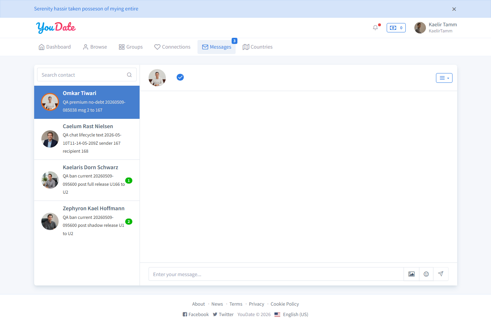
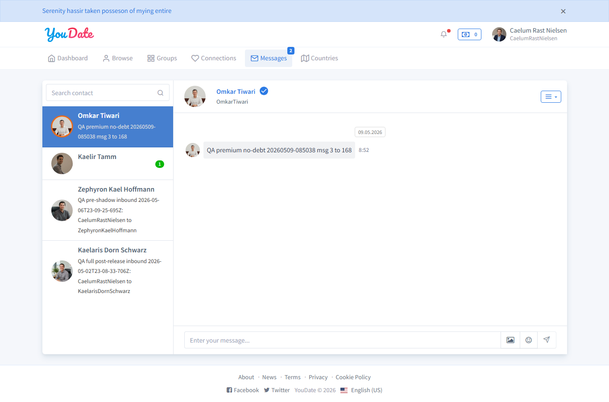

/en/messages/upload-images вернул success=true; thread получателя содержит attachment.
Загрузка изображения в чат работает при валидном PNG asset.
PASS
Delete sender-side
После /en/messages/delete отправитель не видит QA-текст, получатель продолжает видеть его.
Это соответствует текущему Yii2-коду: удаление сообщения работает “для текущей стороны”.
Для Игоря
PASS
CHAT-THREAD-LIFECYCLE-BASE
Факт: базовый lifecycle чата закрыт без дефектов: create, recipient delivery, read, image upload и sender-side delete работают.
Где смотреть:application/controllers/MessagesController.php, методы actionCreate, actionMessages, actionUploadImages, actionDelete, actionReadConversation.
Как ретестить: U1 отправляет уникальный текст U2, U2 проверяет thread по точному тексту, затем U2 вызывает read, U1 загружает валидное изображение, U1 удаляет свое текстовое сообщение.
HARNESS NOTE
Фиксация тестового контура
Что исправлено: первый диагностический прогон использовал synthetic PNG и получил 500 на upload; он не считается продуктовым багом. Для финального доказательства использован реальный PNG из проекта web/YouDate-last/img/members/01.png.
Правило дальше: для chat/photo/group upload использовать реальные fixture assets проекта или заранее проверенные изображения, а не случайную base64-заглушку.
Для Алексея
Категория
Вывод
Что это значит
Управленческий PASS
Базовые сообщения между пользователями работают и доказаны с двух сторон.
Эту часть не нужно возвращать Игорю как дефект; дальше надо углублять premium limits, bans/shadow-ban, attachments edge cases и мобильный UI.
Нюанс продукта
Удаление отправителем скрывает сообщение только у отправителя, у получателя оно остается.
Это похоже на текущую задуманную Yii2-логику “delete for me”. Если бизнес хочет “delete for everyone”, нужно отдельное ТЗ.
Evidence screenshots
PASSU167 отправил текст; диалог открыт без admin-ссылок

Смотреть левую колонку сообщений: QA-диалог присутствует у отправителя.PASSU168 видит точный QA-текст до readЭто proof получателя: сообщение реально отображается в его списке.PASSImage upload принят и виден в thread получателяRaw JSON подтверждает attachment=true; скрин фиксирует пользовательский surface.PASSПосле delete отправитель не видит QA-текстSender-side delete: exact text отсутствует у U167 после удаления.PASSПолучатель продолжает видеть удаленный отправителем текст

Это не баг в текущей реализации: Yii2 удаляет сообщение только для текущего пользователя.